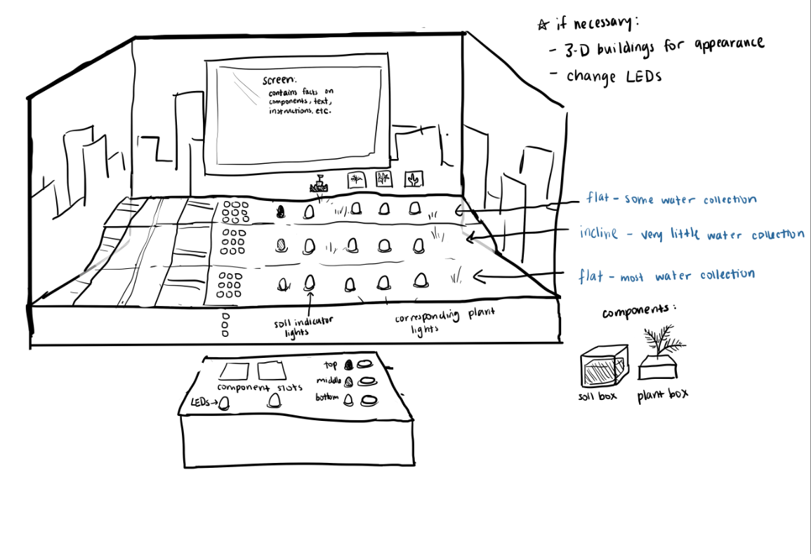

Projects I have worked on for class and in my free time.
In Cornerstone of Engineering, our final project was to create an portable, interactive, and accessible museum exhibit to teach grade-school children about one aspect of sustainability. These exhibits are intended to be game boards, so that they are interesting to younger children while still being educational. The rain garden exhibit game board was designed for users to learn about the importance of water conservation and how it can be done through natural means in the city. This project was a group effort with Kieran Hamilton, Lydia Karno, and Thomas Quirin.
The design process began by coming up with more specific sustainability topics to base our exhibit on. The first two major topics that our group decided to look into were water conservation (understanding that water is a finite source), and city sustainability. As each group member looked more into one of those topics, we came up with a few even more specific topics. One group member, Kieran, combined both of those topics and proposed we make an exhibit based on planting rain gardens in the city.
Rain gardens are gardens planted in a depressed area with specific plant species to ensure proper filtration of rainwater, and are primarily used in cities where dirty runoff is present and natural drainage of rain is scarce. The plants used in these gardens thrive in a large range of conditions and are capable of filtering out pollutants from the collected water. Rain gardens in urban areas also create habitat for smaller wildlife, reduce the need for irrigation systems, and bring aesthetic value to homes.
While we continued in the design process with Kieran's idea, I visualized his idea for the game board. While he described what he was thinking and other group members contributed ideas, I digitally sketched up a concept, making sure each member agreed with what I was drawing.
This section is not complete yet. If you would like to read more about this project, check out the full report.